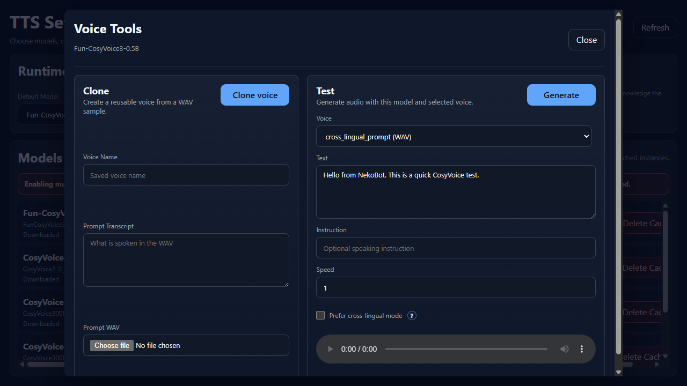
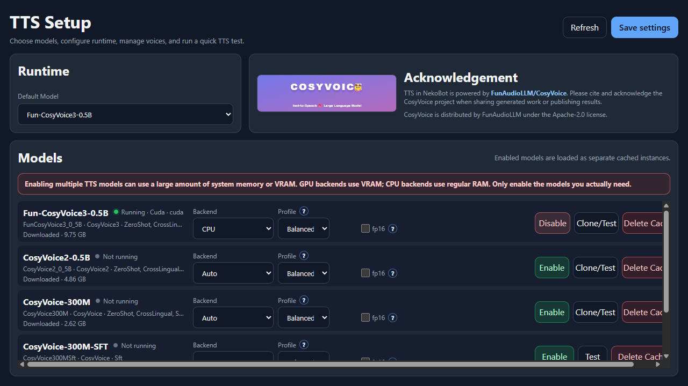

Voice
TTS Setup
NekoBot can run local CosyVoice TTS models for generated voice sources, test audio, and saved cloned voices.
Model Setup

The TTS Setup page lists every CosyVoice model NekoBot can use. Each model card shows whether it is downloaded, whether it is running, what features it supports, and which runtime settings will be used when the model is enabled.
- Open TTS Setup from Setup Home.
- Choose the Default Model used when a TTS source has no model override.
- Pick runtime settings for the model you want to use.
- Click Enable. Downloaded models can start immediately; missing models need to download first.
- Use Test or Clone/Test to verify that the model can generate audio.
Model Controls
Use model controls to decide which local voice model is available to overlay TTS sources. Keep the running model list small; each enabled model consumes memory.
Default ModelChooses the model used when a TTS source does not explicitly override the model.EnableStarts the selected model with the current runtime settings. If the model is missing, NekoBot must download it before it can run.DisableStops the model and frees the runtime resources it was using.TestOpens voice testing for models that can synthesize immediately without saved voice cloning.Clone/TestOpens the voice tools dialog for models that support saved voice cloning or prompt-based testing.Save settingsStores default model and runtime choices. Save before enabling if you changed backend, profile, or thread settings.Delete CacheRemoves downloaded model files from the local cache. Use it to reclaim disk space or force a clean download.Voice Cloning

Models that support saved voices show a Clone/Test button. Voice cloning creates a reusable voice from a WAV prompt sample and transcript.
Voice NameThe saved voice label that appears later in voice selectors.Prompt TranscriptThe exact text spoken in the WAV file. Better transcript accuracy usually means better cloning results.Prompt WAVThe reference audio file used to create the saved voice. Use clean speech with low background noise.CloneCreates or updates the saved voice using the name, transcript, and prompt WAV.Use clear speech, low background noise, and only clone voices you have permission to use. If a model only shows Test, that model does not expose cloning in the current setup.
Voice Testing
The Test side of Voice Tools generates sample audio without needing an overlay trigger. Use it after enabling a model, after cloning a voice, or after changing runtime settings.

VoiceChooses a built-in, prompt-based, or saved cloned voice.TextThe sentence NekoBot will synthesize for the test.InstructionOptional style or delivery guidance for models that support instructed speech.SpeedChanges speaking speed. Use 1 for normal speed, lower for slower speech, higher for faster speech.Prefer cross-lingual modeHelps when the selected voice and generated text use different languages.Generate/TestSynthesizes a sample so you can check pronunciation, speed, and voice choice before using it on stream.Settings

Runtime settings control where the model runs and how much performance risk NekoBot should take. Change these before enabling a model, then save settings when the page shows unsaved changes.
Default ModelThe model selected automatically for new or unspecified TTS sources.Backend: AutoLets NekoBot choose the best available backend.Backend: GPURuns on CUDA when available. Faster for many systems, but uses VRAM.Backend: CPURuns on the processor and regular RAM. Slower, but useful when GPU memory is limited.CPU ThreadsAppears for CPU backend. More threads can improve speed, but can also make the app less responsive.Interop ThreadsAdvanced CPU threading. Usually keep this low unless you are tuning a known workload.Profile: CompatibilityFavors safer standard kernels. Use this if another profile fails.Profile: BalancedRecommended default for most users.Profile: ThroughputFavors speed and may use more memory.Profile: Low memoryReduces memory use and may be slower.fp16Mostly useful on GPU. It can reduce VRAM and improve speed, but may reduce quality or fail on unsupported hardware.Delete CacheRemoves the downloaded local model cache. The model must be downloaded again before use.Example: TTS Source From Chat

A TTS source is created from the Add Source Dialog and usually paired with an Add Trigger command binding.
- Enable a TTS model and verify that it is running.
- Open Voice Tools and generate a short test sentence.
- In Overlay Setup, add a TTS source to a box.
- Select a model and voice, then set Message to
{{message.text}}. - Use Instruction only when the selected model supports instructed speech.
- Adjust Speed and Volume on the source if the generated audio is too slow, too fast, quiet, or loud.
- Bind the box to a command trigger such as
!tts. - When the command arrives, NekoBot resolves the trigger tokens and generates the audio source.
Warnings
- Enabled models are loaded as separate cached instances. Running several models can consume a lot of RAM or VRAM.
- GPU backend uses VRAM. CPU backend uses regular RAM and may be much slower.
- Only enable the models you actually need for the current stream setup.
- Voice cloning should only be used with voices and recordings you have permission to use.
- Generated voices can sound convincing. Make it clear when generated speech is synthetic if context requires it.
- TTS support is powered by CosyVoice. Please cite and acknowledge the CosyVoice project when sharing generated work or publishing results.